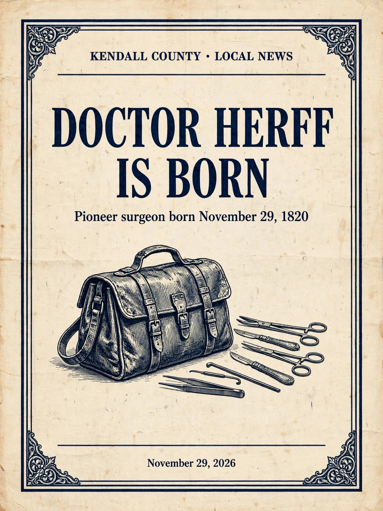

Boerne pioneer doctor Ferdinand Herff was born 206 years ago
On November 29, 1820, Ferdinand Ludwig von Herff was born in Darmstadt, Germany, 206 years ago today.
Herff was the son of Christian von Herff and Eleanora von Meusebach. His father was chief justice of the Hessian Supreme Court. Herff studied medicine at Berlin and finished in 1843 at Giessen, then served as a surgeon in the Hessian Army from 1843 to 1847, where he developed techniques in plastic surgery and tuberculosis treatment.
In 1847, Herff helped organize Die Vierziger, the Forty, a group made up mainly of university-educated professionals, to found an idealistic commune in Texas. The commune, named Bettina, stood on the Llano River near what is now Castell. The settlers were unprepared for frontier conditions, and the commune failed within eighteen months. Herff returned to Germany, married Mathilde in 1849, then came back to Texas, became a citizen, and dropped the nobility title von from his name.
He settled briefly in New Braunfels, then moved in 1850 to San Antonio, where he built one of the longest careers in Texas medicine. His surgical feats included removing two large bladder stones from a Texas Ranger, his first use of chloroform, witnessed by a crowd that included Ranger William A. A. Wallace; removing cataracts and restoring eyesight; correcting a depressed skull fracture; and removing an arrow from a victim who had traveled more than 100 miles for relief. At age eighty-four, under primitive ranch conditions, he operated on his daughter-in-law for an ectopic pregnancy.
Herff helped organize the Bexar County Medical Society, the West Texas Medical Association, and the Texas Medical Association, and served on the Texas State Board of Medical Examiners. He was also instrumental in establishing San Antonio's first hospital. He died in San Antonio on May 18, 1912.
His Boerne ties ran deep. His second home on a ranch in Boerne was a family retreat, and he practiced medicine there. Per his Texas Historical Commission marker, he was instrumental in bringing the railroad and St. Mary's Sanitarium to Boerne. Local residents honored Herff and his wife with a monument on Malakopf Mountain, northeast of Boerne.